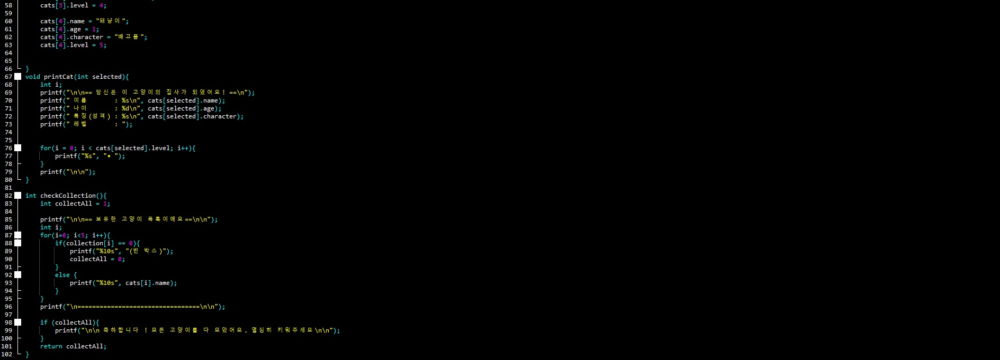

미국의 벨 연구소 리치(D.Ritchie)가 개발한 운영체제나
언어처리계 등의 시스템 기술에 적합한 프로그래밍 언어입니다.
C언어는 UNIX 오퍼레이팅 시스템 기술에 사용을 목적으로 설계한 언어로 개발되었습니다.
컴퓨터에 구조에 밀착한 기초기술이 가능한 것과 간결한 표기가 될 수 있는 것 등이 특징입니다

고등학교 1학년이 되었을때 저는 처음으로 배우게 된 언어인
C언어를 배우면서 여러가지 코드를 작성하고 프로그램을 만들면서
개발자가 되기위한 첫걸음을 하게 되었습니다. 수업시간을 바탕으로 작성한 코드입니다 (고양이 게임)